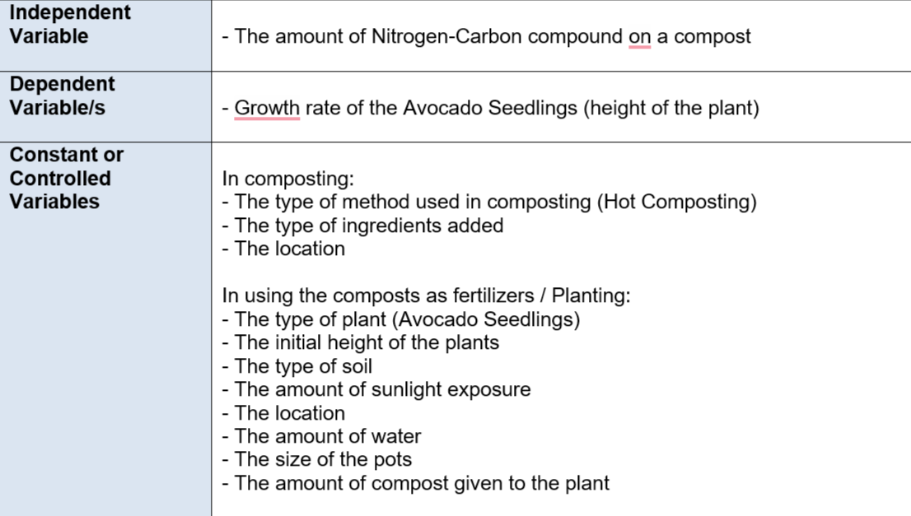
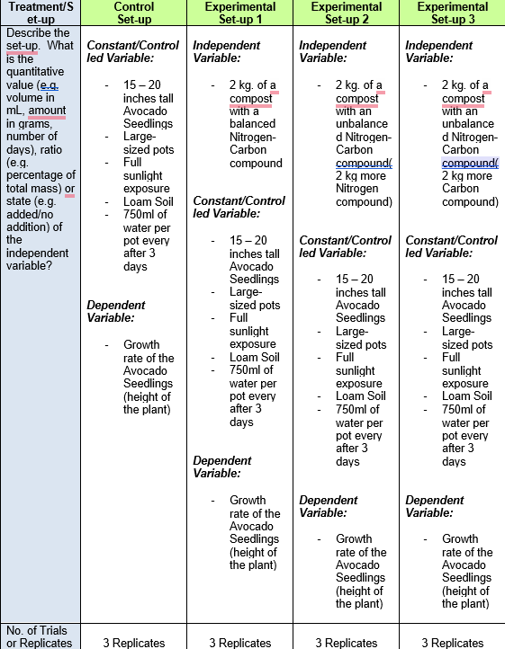
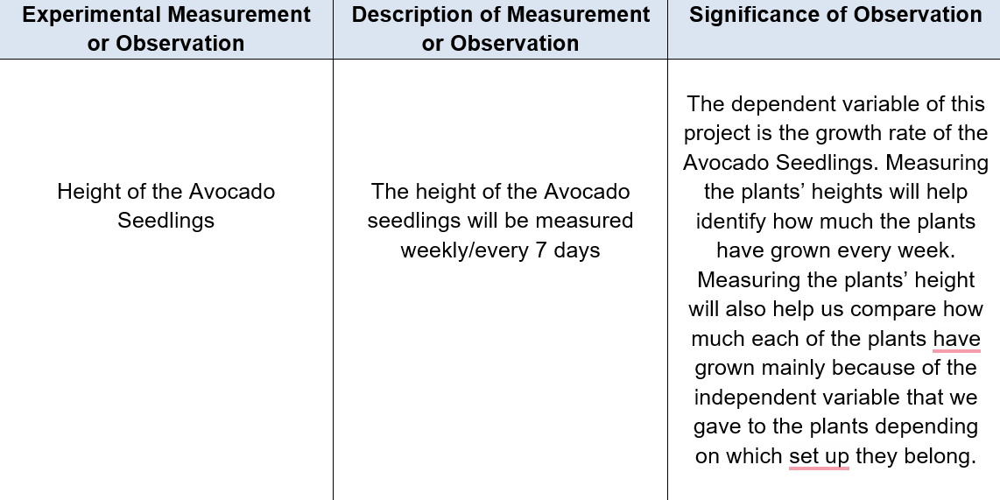
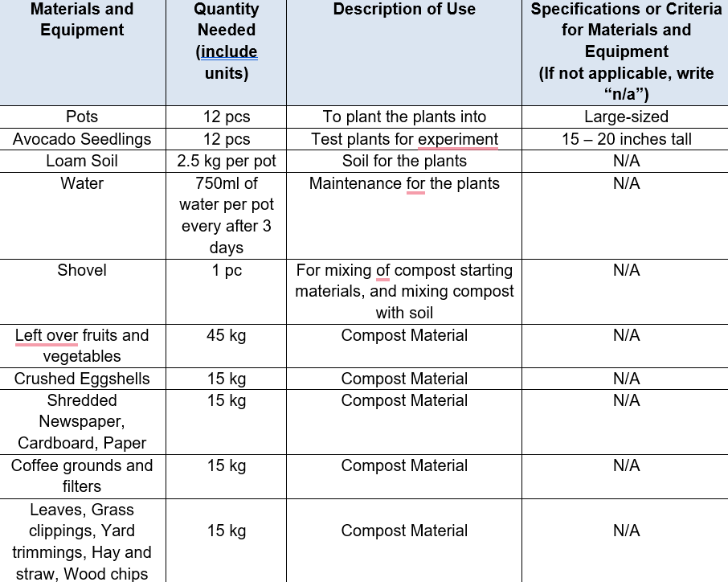
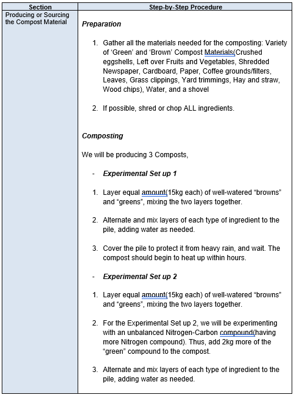
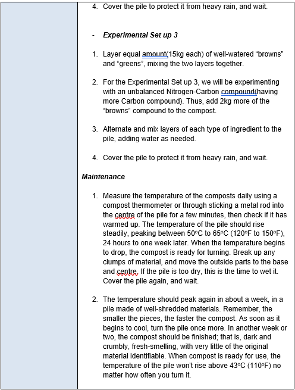
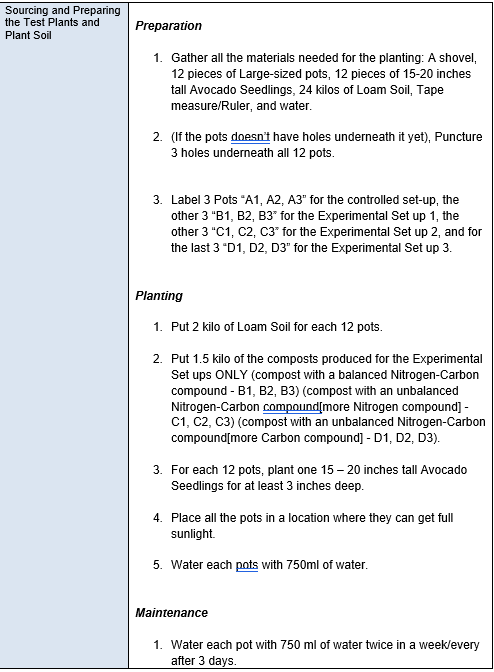
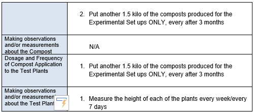

|
ABOUT THE WEB DESIGNER Margarethe Emrich Ubaldo, a.k.a. our “Technical Head” is one of the most active members in the group. She is sharp-witted, capable, and very observant. Using her knowledge and impressive computer skills, she edits our group’s works and assists her group mates; especially in coding. Her hobbies are eating, sleeping, watching movies and listening to music. She also likes to travel and knows how to play the piano. She loves dogs and is a dance enthusiast. Though she may have a calm and quiet personality, she is considerate and charitable. Lila Marguerite Cachuela, a girl who is always interested into books. She is tall, nice, funny and music. She is always available to do assignments and friendly with everyone as possible. It also interest her to do some other things like sports to try out or maybe write some stories just for fun. Lastly, she always a girl with glasses !! CONTACT US! |
I. INTRODUCTIONA. BACKGROUND AND SIGNIFICANCE OF THE STUDYIn the internet, many research claims that in composting, the ideal balanced Carbon to Nitrogen (C/N) ratio should be of around 25 - 30:1 where 25 - 30 grams of Carbon should be added for each 1 gram of Nitrogen, stating that if the compost has too much carbon compound, it will be drier and longer to break down, and on the other hand, if the compost has too much nitrogen compound, it will end up creating a slimy, and smelly compost. As we all know, composting is one way of ‘recycling’ organic wastes in order for it to be used as a kind of fertilizer for plants. In this study, we are trying to find out if indeed having an unbalanced Carbon-Nitrogen compound in a compost, besides its negative effect during the decomposing of the compost, would affect the growth of a plant if it’s being used as a fertilizer. Understanding if having an ‘unbalanced’ Carbon- Nitrogen compound on a compost would negatively affect the growth/overall health of a plant, is very important for we believe if in some situation, one accidentally produces a compost with an ‘unbalanced’ Carbon-Nitrogen compound, knowing that the presence of the ‘unbalanced’ compounds may affect or may not affect the growth and the overall health of the plant helps them to decide whether or not to pursue giving the compost to their plants. B. STATEMENT OF THE PROBLEMHow will a compost, with an unbalanced Nitrogen-Carbon compound, affect the growth of a Avocado seedling(Persea Americana)? C. HYPOTHESISIF an Avocado seedling is given a compost, with an unbalanced Nitrogen-Carbon compound as a fertilizer, THEN the Avocado seedling would still grow as fast as if it’s being given a compost with a balanced Nitrogen-Carbon compound as its fertilizer. D. REVIEW OF RELATED LITERATUE
According to Akratos & Vayenas (2017), the right Carbon-Nitrogen ratio of a compost is of around
25 - 30:1 where 25 - 30 grams of Carbon should be added for each 1 gram of Nitrogen, stating
that if the compost has too much carbon compound, it will be drier and longer to break down, and
on the other hand, if the compost has too much nitrogen compound, it will end up creating a
slimy, and smelly compost. Indeed having an unbalanced Nitrogen-Carbon ratio on a compost
would greatly negatively affect the compost itself in various ways(composting duration,
appearance, and texture), but will it negatively affect a growth of a plant too if used as a
fertilizer(considering that it attains an unbalanced Nitrogen-Carbon compound)? II. METHODOLOGYA. VARIABLES B. TREATMENTS/SET-UPC. EXPERIMENTAL DATA TO BE MEASURED OR OBSERVEDD. MATERIALS AND EQUIPMENT NEEDEDE. PROCEDURES FOR TESTING AND GATHERING/OBTAINING DATA    III. BIBLIOGRAPHY
Akratos, C., & Vayenas, D. (2017). Cocomposting of olive mill waste for the production of
soil amendments. Science Direct. https://www.sciencedirect.com/topics/agricultural-and-biological-sciences/carbon-to-nitrogen-
ratio#:~:text=The%20carbon%20to%20nitrogen%20(C,N%20ratios%20enhance%20nitro
gen%20loss. |
SCROLL TO TOP |